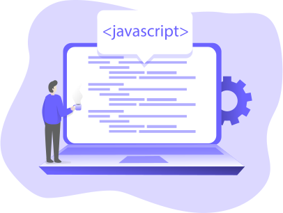
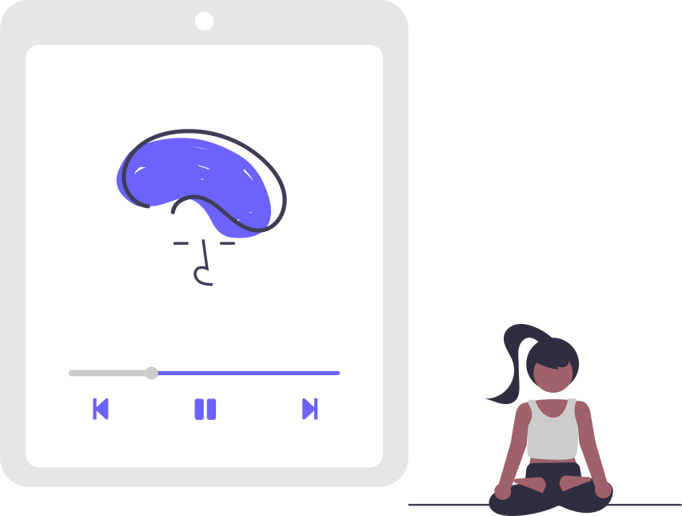

What does it mean to display inline vs inline blocks?
As a part of the Dev Academy bootcamp I have to write a blog post that teaches others how and when to use
a specific subject.
In this Post, I am going to describe the differences between block elements and inline elements.
By Rodrigo Marcolino | Posted on: 4 July 2021
HTMLCSS
Read more

Learning Plan
This is My Post-Bootcamp Learning Plan as an exercise from Sprint 2.
The Learning Plan includes the following elements: Goals, strengths, limitations, workload management, and
commitment
By Rodrigo Marcolino | Posted on: 5 July 2021
PlanManagement
Read more

My identity, strengths and values
This post is about what my personal values are. Reflect and examine my identity who am I at this point.
By Rodrigo Marcolino | Posted on: 6 July 2021
SoftSkill
Read more

JavaScript Fundamentals
Answering few questions about JavaScript as a part of the Dev Academy bootcamp
By Rodrigo Marcolino | Posted on: 8 July 2021
JavaScript
Read more

Emotional Intelligence Exploration
In this Core Exercise I spent some time researching about EQ and IQ.
By Rodrigo Marcolino | Posted on: 9 July 2021
EQIQ
Read more

Problem Solving
In this Sprint we learned mainly about Testing, code readability, and Problem Solving, learning it in the
most effective way possible by coding. In this post, I’ll be about problem solving.
By Rodrigo Marcolino | Posted on: 15 July 2021
ProblemSolving
Read more

Mindset
This Post is about how my understanding Neuroplasticity and Growth Mindset and how it influences my
learning
By Rodrigo Marcolino | Posted on: 18 July 2021
Mindset SoftSkill
Read more

Core Reflection
I have now reached the final sprint of my Foundations curriculum. What a journey it has been. In this
post, I will reflect over all I have learned as part of the core skills component of Foundations.
By Rodrigo Marcolino | Posted on: 1 August 2021
Mindset SoftSkill
Read more